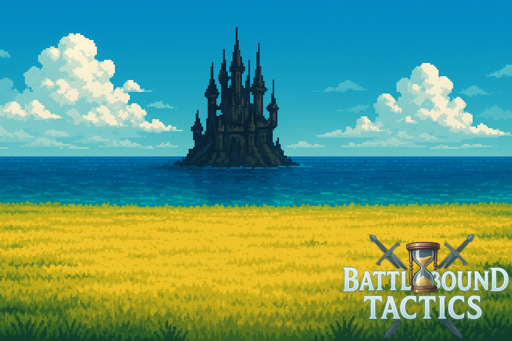

🎮 Battlebound Tactics¶
Un RPG por turnos táctico desarrollado como proyecto final del CFGS de DAW por Jonatan García Luna.

📌 ¿Qué es Battlebound Tactics?¶
Battlebound Tactics es una aplicación web que simula un juego de rol táctico de combates por turnos, inspirada en
los RPG clásicos pero desarrollada con herramientas modernas como Django, HTML, CSS, JavaScript y Docker.
En este juego, los jugadores crean su propio personaje, lo desarrollan, equipan habilidades, armas y accesorios únicos,
y se
enfrentan a enemigos con inteligencia artificial en un mapa dividido por regiones.
El objetivo principal es proporcionar una experiencia estratégica, progresiva y divertida dentro de un mundo visualmente atractivo, accesible desde navegador y hecho para el disfrute de todos.
🧭 ¿Qué puedes encontrar en esta documentación?¶
Esta documentación técnica está organizada para que desarrolladores, profesores o cualquier persona interesada pueda comprender el funcionamiento del proyecto a nivel estructural, técnico y funcional.
| Sección | Descripción |
|---|---|
| 📦 Modelos del Proyecto | Explica cada modelo de Django y sus relaciones. |
| 🖥️ Vistas de Django | Explicación detallada de las views, rutas y flujos de usuario. |
| ⚔️ Lógica del Combate | Desglose detallado de toda la mecánica de combate: módulos core/ y vista combate. |
| 🧩 API y Ranking | Detalles del sistema de ranking y uso de endpoints externos. |
| 🚀 Despliegue | Cómo levantar el proyecto localmente o en producción con Docker. |
| 🧾 Conclusiones | Reflexiones sobre el desarrollo, dificultades y aprendizajes. |
🛠️ Tecnologías principales utilizadas¶
- Backend: Python + Django (ORM para modelos, vistas lógicas y sesión)
- Frontend: HTML + CSS + JavaScript (renderizado de estados, interfaz de combate, navegación)
- Despliegue: Docker, Docker Compose, AWS EC2, dominio personalizado
- Extras: Pillow (gestión de imágenes), API externa para rankings, Sora AI para generación visual
🎯 Objetivos del proyecto¶
- Construir un sistema de combate por turnos con lógica avanzada.
- Desarrollar personajes con progresión, niveles, equipo y habilidades.
- Implementar enemigos con IA reactiva.
- Crear una experiencia de juego completa: mapa, combate, ranking.
- Diseñar una interfaz clara, jugable y atractiva.
- Documentar y desplegar en AWS.
🏁 Estado actual¶
✅ Sistema de combate funcional
✅ Interfaz completa
✅ Registro de jugadores
✅ Equipamiento y habilidades
✅ Ranking de usuarios
✅ Despliegue funcional con Docker
❌ PvP, tienda y música (recortado por tiempo / limitaciones de hosting)
🤝 Autor y créditos¶
Proyecto realizado por Jonatan García Luna, como parte del módulo Proyecto Integrado del CFGS en Desarrollo de Aplicaciones Web (DAW) en el I.E.S. Francisco Romero Vargas.
Nota: Esta documentación se irá ampliando continuamente. Todas las secciones están estructuradas para facilitar tanto la comprensión del código como su mantenimiento o ampliación futura.